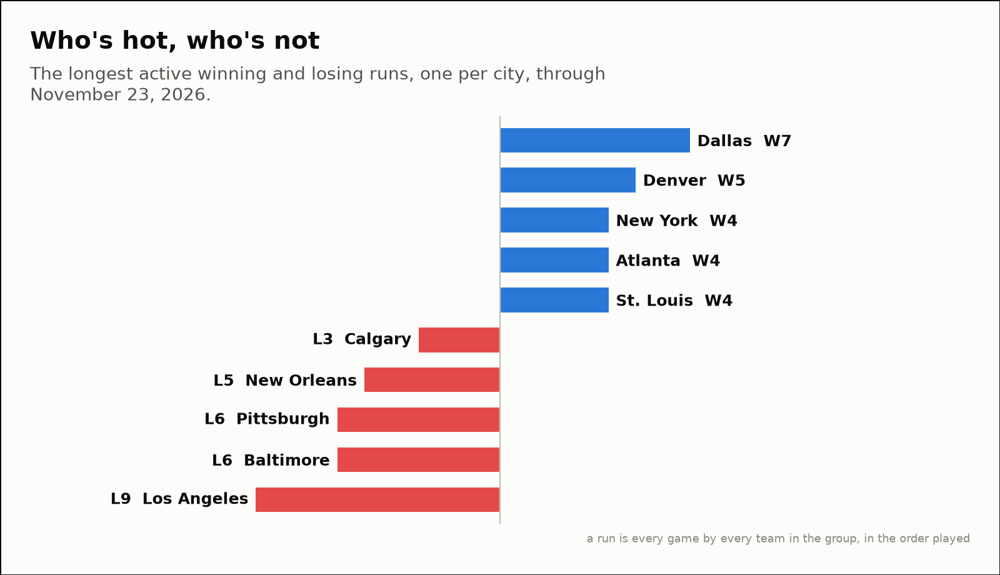

Dallas has won 7 straight. Los Angeles has lost 9 straight.
The longest active runs in every city, through November 23, 2026
- Hottest
- Dallas: Rangers/Mavericks/Stars/Cowboys — 7 straight wins since November 17, 2026, +26.0 weighted
- Coldest
- Los Angeles: Angels/Clippers/Ducks/Chargers — 9 straight losses since November 17, 2026, -32.3 weighted
- How a run is counted
- Every game by every team in the group, in the order they were played. One loss by any of them ends it.
| Run | City | Teams in it | Since |
|---|---|---|---|
| W7 | Dallas | Stars 3, Mavericks 3, Cowboys 1 | November 17, 2026 |
| W5 | Denver | Nuggets 3, Avalanche 1, Broncos 1 | November 18, 2026 |
| W4 | Atlanta | Hawks | November 15, 2026 |
| W4 | New York | Knicks 2, Giants 1, Devils 1 | November 21, 2026 |
| W4 | St. Louis | Blues | November 17, 2026 |
| L9 | Los Angeles | Ducks 4, Clippers 4, Chargers 1 | November 17, 2026 |
| L6 | Baltimore | Ravens | October 18, 2026 |
| L6 | Pittsburgh | Penguins 4, Steelers 2 | November 14, 2026 |
| L5 | New Orleans | Pelicans 4, Saints 1 | November 18, 2026 |
| L3 | Calgary | Flames | November 19, 2026 |
